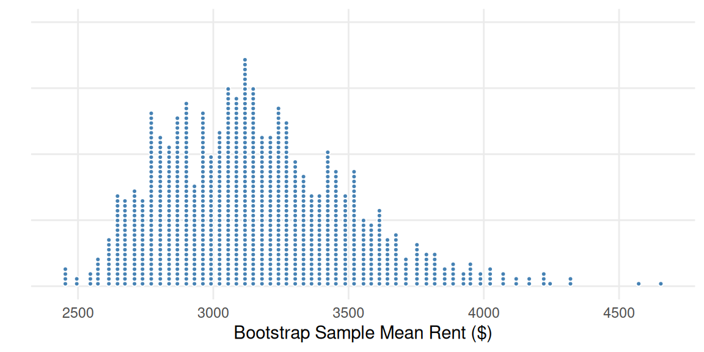

2.4 Bootstrap Confidence Intervals Using Percentiles
We’ve talked about how to construct a confidence interval if we know the standard error of the statistic or the margin of error. Now we’re going to talk about how we can use a technique called bootstrapping to come up with an estimate for the standard error.
Key Concepts
- Construct a confidence interval based on the percentiles of a bootstrap distribution
- Explain how the width of an interval is affected by the desired level of confidence and the sample size
- Recognize when it is appropriate to construct a bootstrap confidence interval using percentiles or the standard error
Bootstrap confidence intervals using percentiles
If the bootstrap distribution is skewed, or does not follow a nice bell-shape, it can cause the confidence interval to be inaccurate. We may also be interested in using a different confidence level. In these cases, constructing a confidence interval using the standard error rule may give us an interval that is not the right size. We can still use the bootstrap distribution, but instead of using the standard error, we will use the percentiles of the bootstrap distribution for our interval.
Class Example 2.4.1: Tea and coffee, revisited…again
In our last class, we created a bootstrap distribution for the difference in the average interferon gamma levels between coffee and tea drinkers.
- What percentiles of the bootstrap distribution would be needed to create a 95% confidence interval?
- Create a 95% confidence interval for the difference in average interferon gamma levels between tea and coffee drinkers using the percentile method.
- Give an interpretation of the interval in part b).
- Create a 95% confidence interval for the difference in average interferon gamma levels between tea and coffee drinkers using the standard error method. Recall from the sample,\(\overline{x}_1 - \overline{x}_2 = 17.12\).
Class Example 2.4.2: Average penalty minutes in the NHL
We have a random sample of the penalty minutes for\(n = 26\)players from the 2018–2019 season for the NHL team the Ottawa Senators. Some percentiles from a bootstrap distribution of 1000 sample means are shown in the table.
| 0.5% | 1.0% | 2.0% | 2.5% | 5.0% | 95.0% | 97.5% | 98.0% | 99.0% | 99.5% | |
|---|---|---|---|---|---|---|---|---|---|---|
| Percentile | 13.8 | 14.6 | 15.4 | 15.8 | 17.2 | 33.1 | 35.1 | 35.3 | 36.4 | 38.0 |
- What percentiles of the bootstrap distribution would be needed to create a 90% confidence interval?
- Create a 90% confidence interval for the average penalty minutes for a player on the Ottawa Senators in the 2018–2019 season using the percentile method.
- What percentiles of the bootstrap distribution would be needed to create a 98% confidence interval?
- Create a 98% confidence interval for the average penalty minutes for a player on the Ottawa Senators in the 2018–2019 season using the percentile method.
- Give an interpretation for one of the intervals (90% or 98%).
- Using the 90% interval, is it plausible to say that the Ottawa Senators players were given more than 34 penalty minutes on average per player? Explain.
Class Example 2.4.3: Manhattan apartment rent
The New York City housing authority wants to know about the average rent for a one-bedroom apartment in Manhattan. One of their employees goes to Craigslist and records the monthly rent for a randomly selected sample of 8 listed one-bedroom apartments in Manhattan. Her sample is given below
3150 2275 3100 2650 2925 3305 2325 5495
Use the dotplot and the table below to answer the following questions.
| 1.0% | 2.5% | 5.0% | 10.0% | 90.0% | 95.0% | 97.5% | 99.0% | |
|---|---|---|---|---|---|---|---|---|
| Percentile: | 2595.25 | 2651.85 | 2720.40 | 2788.53 | 3546.80 | 3679.48 | 3796.40 | 3913.68 |
- Write down one possible bootstrap sample from the original sample.
- Is it appropriate to use the bootstrap distribution to create a confidence interval for the average rent price in Manhattan? Justify your answer.
- Regardless of how you answered b), create and interpret a 95% confidence interval for the average rent in Manhattan using the percentile method.
Class Example 2.4.4: Video Games Down Undah’
In a study conducted by researchers in Australia (Eshuis et al., Simulation & Gaming, 2023) they analyzed the gender demographics of different video game players. Among the 87 single-player gamers, 28 identified as female, and among 58 multiplayer gamers, 20 identified as female.
- What is the point estimate of the difference in proportions of female gamers between single-player and multiplayer gamers?
- Create a 95% confidence interval for the difference in proportions of female gamers between single-player and multiplayer gamers using the percentile method.
- Create a 95% confidence interval for the difference in proportions of female gamers between single-player and multiplayer gamers using the standard error method.
- Give an interpretation of the interval from part b).
- Does your interpretation suggest that there is a relationship between game preference and gender? Explain.
Words of caution
You should always plot a bootstrap distribution before using it to construct a confidence interval. If the plot is poorly behaved (e.g heavily skewed or isolated clumps of values), then a bootstrap distribution will not give very accurate confidence intervals.
Confidence Interval Practice Questions
The main goal of the following questions are to give you additional practice with constructing confidence intervals, using confidence intervals to find standard error and margin of error, and interpreting confidence intervals.
Class Example 2.4.5: Baseball fans
In a poll taken in March of 2007, Gallup asked 1006 U.S. adults whether they were baseball fans. 362 adults said they were. Gallup reported the 95% confidence interval for the proportion of U.S. adults who were baseball fans as (0.3302, 0.3895).
- What is the parameter of interest?
- Find the margin of error for this confidence interval.
- What is the standard error for the proportion.
- Give an interpretation of this confidence interval in the context of the study.
Class Example 2.4.6: Cardiac disease and depression
A study published in the Archives of General Psychiatry in March 2001 examined the impact of depression on a patient’s ability to survive cardiac disease. Researchers identified 450 people with cardiac disease, evaluated them for depression, and followed the group for 4 years. Of the 361 patients with no depression, 67 died. Of the 89 patients with minor or major depression, 26 died.
- Find a point estimate for the difference in the proportion of people with no depression who died from cardiac disease and the proportion of people with minor or major depression who died from cardiac (\(\widehat{p}_\text{no depression} - \widehat{p}_\text{depression}\)).
- The margin of error for a 95% confidence for this difference in proportions is 0.0513. Find the 95% confidence interval.
- Give an interpretation of this confidence interval in the context of the study.
Class Example 2.4.7: Rats in a maze
Psychology experiments sometimes involve testing the ability of rats to navigate mazes. The mazes are classified according to difficulty, as measured by the mean length of time it takes rats to find the food at the end. One researcher needs a maze that will take rats an average more than one minute to solve. He tests one maze on 20 different rats, and finds the average time is 50.13 seconds.
- What is the parameter of interest for this study?
- The standard error for this average is 2.22 seconds. What is the 95% confidence interval for the average time it takes the mice in the sample to finish?
- If the researcher had included 200 rats in his study, would the interval be smaller than, larger than, or around the same size as the interval given in b). Explain.
- Give an interpretation of this confidence interval in the context of the study.
- Does your interval suggest that this maze will be adequate for the researcher’s needs? Explain.
Class Example 2.4.8: Learning to walk
Researchers designed an experiment to see whether a program of special exercises for 12 minutes each day could speed up the process of learning to walk. In all, 23 infants participated in the study. The study found that average age (in months) for the first unaided steps in the special exercises group was 10.125, and the average age (in months) for the first unaided steps in the control group was 11.375. The 95% confidence interval for the average difference in ages (in months) between the special exercises group and control group was (-3.44, 0.94).
- What is the margin of error for this confidence interval?
- Give an interpretation of this confidence interval in the context of the study.
- Do the study results suggest that the special exercises help infants to take their first unassisted steps more quickly?
Class Example 2.4.9: Meaning of confidence
What does it mean when you calculate a 95% confidence interval?
The process you used will capture the true parameter 95% of the time in the long run.
You can be “95% confident” that your interval will include the population parameter.
You can be “5% confident” that your interval will not include the population parameter.
All of the above statements are true.
Class Example 2.4.10: Standard error
A good way to get a small standard error is to use a _______________
Repeated sampling structure.
Small sample.
Large sample.
Large population.
Class Example 2.4.11: SAT score Confidence Interval
You have sampled 25 students to find the mean SAT scores at Morris Knolls High School. A 95% confidence interval for the mean SAT score is 900 to 1100. Which of the following statement(s) gives a valid interpretation of this interval?
95% of the 25 students have a mean score between 900 and 1100.
95% of the population of all students at Morris Knolls have a score between 900 and 1100.
We are 95% confident that the mean SAT score for students at Morris Knolls is between 900 and 1100.
If this procedure were repeated many times, 95% of the sample means would be between 900 and 1100.
If 100 samples were taken and a 95% confidence interval was computed, 5 of them would be in the interval from 900 to 1100.
If this procedure were repeated many times, 95% of the resulting confidence intervals would contain the true mean SAT score at Morris Knolls.
Class Example 2.4.12: Margin of error
A survey was conducted to determine the percentage of college freshmen that planned to take a biology course while in college. The results were given as 75% with a margin of error of $$4%. What does the margin of error of $$4% mean?
The percentage of the population that was surveyed was between 71% and 79%.
4% of the population was not included in the survey.
4% of the students surveyed will most likely change their minds.
The difference between the sample proportion and the population proportion is likely to be less than 4%.
4% of the students surveyed refused to participate in the poll.
Class Example 2.4.13: Cell phone battery life
A research and development engineer is preparing a report for the board of directors on the battery life of a new cell phone they have produced. At a 95% confidence level, he has found that the battery life is 3.2 $$1.0 days. He wants to adjust his findings so the margin of error is as small as possible. Which of the following will produce the smallest margin of error?
Increase the confidence level to 100%. This will assure that there is no margin of error.
Increase the confidence level to 99%.
Decrease the confidence level to 90%.
Take a new sample from the population using the exact same sample size.
Take a new sample from the population using a smaller sample size.
Class Example 2.4.14: Confidence interval for an average
A 98% confidence interval for the mean of a large population is found to be 978 $$25. Which of the following is true?
98% of all observations in the population fall between 953 and 1003.
The probability of randomly selecting an observation between 953 and 1003 from the population is 0.98.
If the true population mean is 950, then this sample mean of 978 would be unlikely to occur.
If the true population mean is 990, then this sample mean of 978 would be unexpected.
If the true population mean is 1006, then this confidence interval must have been calculated incorrectly.
Class Example 2.4.15: Confidence interval width
After constructing a confidence interval estimate for a population mean, you believe that the interval is useless because it is too wide. In order to correct this problem, you need to:
increase the population standard deviation.
increase the sample size.
increase the level of confidence.
increase the sample mean.
Class Example 2.4.16: Understanding the confidence interval
Which statement is not true about confidence intervals?
A confidence interval is an interval of values computed from sample data that is likely to include the true population value.
An approximate formula for a 95% confidence interval is: sample estimate \(\pm\)margin of error.
A confidence interval between 20% and 40% means that the population proportion lies between 20% and 40%.
A 99% confidence interval procedure has a higher probability of producing intervals that will include the population parameter than a 95% confidence interval procedure.